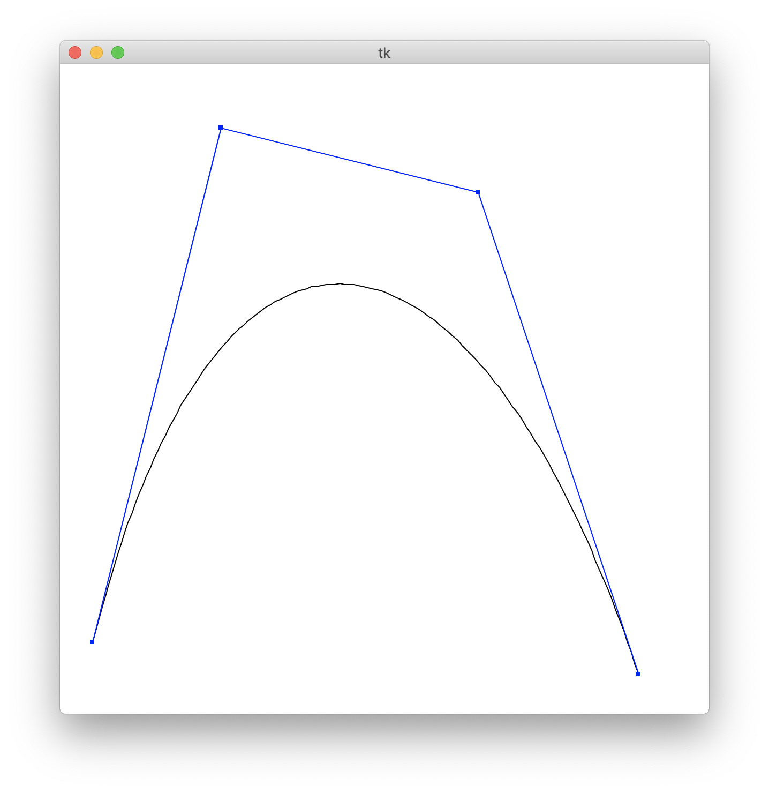
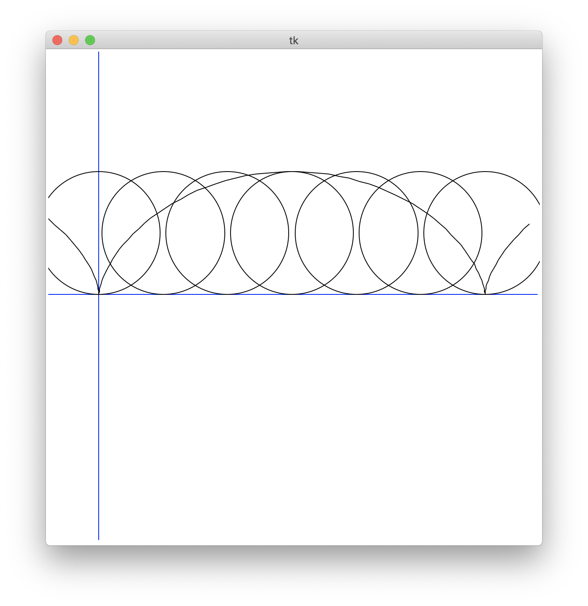
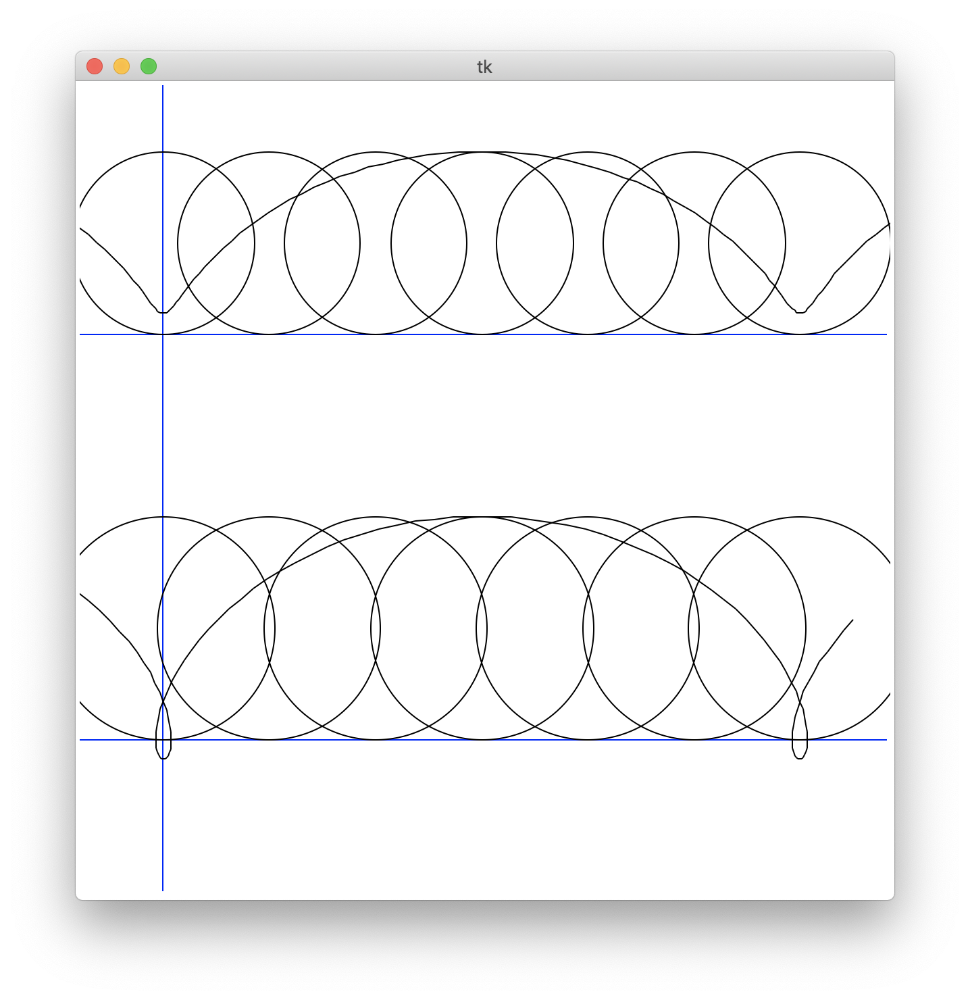
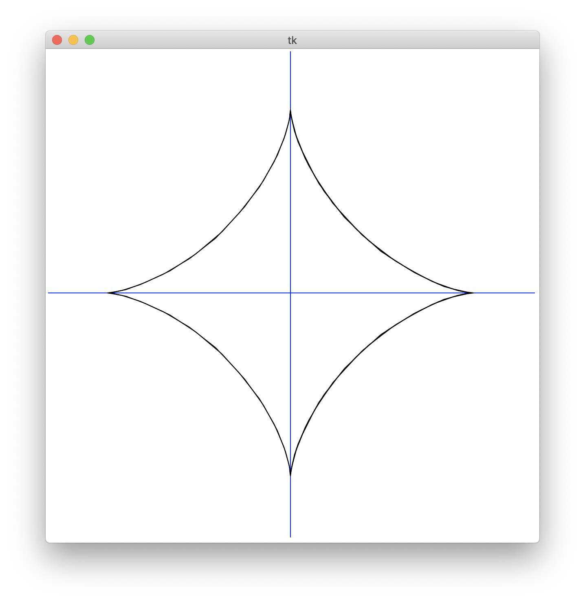

第７回
| 氏名 | 林橘平
|
|---|
| クラス | 総合情報学コース3年
|
|---|
| 学生証番号 | 08-192025
|
|---|
□課題7.1 7.2節 例2:三角関数の描画
○プログラムリスト
例題のため略
○実行コマンド
(base) MBP:Chap07 hayashikippei$ python3 diagonalCanvas.py
○実行結果

○考察
このプログラムでインポートしているParametricCurveクラスでは、与えられたパラメタの範囲(ts,te)
においてそれをnopの数値分区切り、区間の始まりの座標と、終わりの座標をevaluate関数によって計算し、
それらがどちらも表示領域内にあれば２点を結ぶ直線を描くことでパラメーター曲線を描いている。
このプログラムでは、ParametricCurveを継承したSineCurve、CosineCurve,TangentCurveの３つのクラスを
作り、三角関数の曲線を描画している。
□課題7.2 7.2節 例3:３次ビジエ曲線
○プログラムリスト
例題のため略
○実行コマンド
(base) MBP:Chap07 hayashikippei$ python3 cubicBezier.py
x0 y0 y1 x2 y2 x3 y3 / [] ->'-0.9','-0.8' ,'-0.5','0.8', '0.3' ,'0.6','0.8', '-0.9'
○実行結果

○考察
プリントにある３次ベジエ曲線の多項式のパラメータをevaluate関数に与え、コマンドで座標値を与えて描画した。
split関数を使うと一度に複数の数値をコンマ区切りで入力することができる。ベジエ曲線を用いると、複数の制御点を与えるだけでそれらに対応した
滑らかな曲線を描くことができる。wordなどで曲線を書くときに点を動かして曲線の形を調節していたのに似ていると思った。
調べたところ、Illustratorで滑らかな曲線を描くのにベジェ曲線が用いられていた。
□課題7.3 7.2節 章末課題：サイクロイド曲線
○プログラムリスト
import math
import numpy as np
from myCanvas import MyCanvas
from parametricCurve import ParametricCurve
class CycloidCurve(ParametricCurve):
def __init__(self,canvas):
super().__init__(canvas)
def evaluate(self,t):
return np.array((t - math.sin(t), 1 - math.cos(t)))
def main():
canvas = MyCanvas(r = 8)
offset = np.array((-math.pi, 0))
canvas.drawPolyline([np.array((-4,0)),np.array((4,0))],color='blue')
canvas.drawPolyline([np.array((-math.pi,-4)),np.array((-math.pi,4))],color='blue')
for i in range(7):
canvas.drawCircle((-math.pi + (i/3)*math.pi,1),1)
CycloidCurve(canvas).drawCurve(-3, 8, offset)
canvas.mainloop()
if __name__ == '__main__':
main()
○実行コマンド
(base) MBP:Chap07 hayashikippei$ python3 cycloid.py
○実行結果

○考察
次のトロコイドにまとめて書きます。
□課題7.3 7.2節 章末課題：トロコイド曲線
○プログラムリスト
import math
import numpy as np
from myCanvas import MyCanvas
from parametricCurve import ParametricCurve
class TrochoidCurve1(ParametricCurve):
def __init__(self,canvas):
super().__init__(canvas)
def evaluate(self,t):
return np.array((t - 0.8*math.sin(t), 1 - 0.8*math.cos(t)))
class TrochoidCurve2(ParametricCurve):
def __init__(self,canvas):
super().__init__(canvas)
def evaluate(self,t):
return np.array((t - 1.2*math.sin(t), 1 - 1.2*math.cos(t)))
def main():
canvas = MyCanvas(r = 8)
offset1 = np.array((-math.pi, 1.5))
offset2 = np.array((-math.pi, -2.5))
canvas.drawPolyline([np.array((-4,1.5)),np.array((4,1.5))],color='blue')
canvas.drawPolyline([np.array((-4,-2.5)),np.array((4,-2.5))],color='blue')
canvas.drawPolyline([np.array((-math.pi,-4)),np.array((-math.pi,4))],color='blue')
for i in range(7):
canvas.drawCircle((-math.pi + (i/3)*math.pi,1.5),1)
canvas.drawCircle((-math.pi + (i/3)*math.pi,-2.5),1)
TrochoidCurve1(canvas).drawCurve(-3, 8, offset1)
TrochoidCurve2(canvas).drawCurve(-3, 8, offset2)
canvas.mainloop()
if __name__ == '__main__':
main()
○実行コマンド
(base) MBP:Chap07 hayashikippei$ python3 trochoid.py
○実行結果

○考察
課題7.1の三角関数曲線とやってることは基本的に同じである。
x = at - bsint, y = a - bcost
のパラメータを、サイクロイドの場合はa=b,トロコイドの場合はb=0.8a, 1.2aとしてevaluate関数に与えた。(a=1)
円の軌跡を見るために、drawCircle関数で動いている円を何個か描いた。b = 0.8aとした場合は円周から内側にずれているプロレイト、
b = 1.2aの時は円周の外側にずれているカーテイトになり、b = aの時はずれのないサイクロイド曲線になっていることが
結果の画像から確認できる。
□課題7.4 アステロイド曲線
○プログラムリスト
import math
import numpy as np
from myCanvas import MyCanvas
from parametricCurve import ParametricCurve
class CycloidCurve(ParametricCurve):
def __init__(self,canvas):
super().__init__(canvas)
def evaluate(self,t):
return np.array((3*math.cos(t)**3, 3*math.sin(t)**3))
def main():
canvas = MyCanvas(r = 8)
canvas.drawPolyline([np.array((-4,0)),np.array((4,0))],color='blue')
canvas.drawPolyline([np.array((0,-4)),np.array((0,4))],color='blue')
CycloidCurve(canvas).drawCurve(-4, 4)
canvas.mainloop()
if __name__ == '__main__':
main()
○実行コマンド
(base) MBP:Chap07 hayashikippei$ python3 astroid.py
○実行結果

○考察
サイクロイドの例を応用して、アステロイド曲線を描いた。アステロイド曲線は、半径 a の円内を半径 a/4 の円が滑らずに転がるときの1点の軌跡であり、
そのパラメータ表示は
x = a*(cos(t))^3, y = a*(sin(t))^3で表される。a = 3としてevaluate関数に与えて描画したのが
結果の画像である。正しく星形のアステロイド曲線が描けていることが確認できる。
□課題や授業に関して
○レポート作成に要した時間
3時間
○特に苦労した点
デバッグ
○授業についての感想や希望
なし